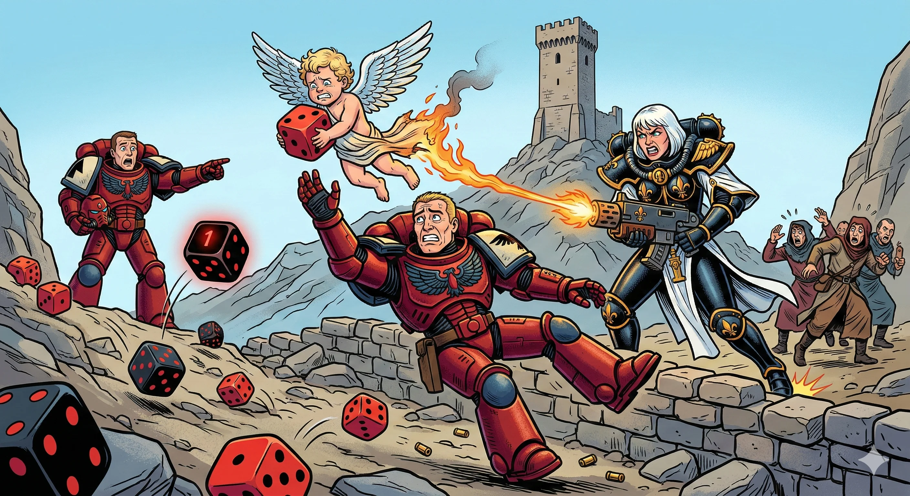

Kjapp info
- Dato: fredag 17. april til søndag 19. april
- Turneringer: Warhammer 40,000 og Warhammer: The Old World
- Turneringsformat: 2000 poeng, tre kamper à tre timer
- Pris: 250 kr for arrangementet + 100 kr for turnering
17.-19. april 2026 samler vi folk til en helg med lavterskel-turneringer, frispill, maling og sosial spilling. Våren 2026 planlegges på Discord, og arrangementet holdes på Søndre Skagen Samfunnshus.
Påmelding kommer når den er klar. Discord er stedet der nyheter og praktiske detaljer dukker opp først.

Her stilles det verken krav til erfaring eller perfekt malte miniatyrer. Det viktigste er at motstanderen kan se hva modellen forestiller, og at den er omtrent riktig størrelse på bordet.
Vi stiller med bord og terreng, og det går ofte an å ordne utlånsarmeer hvis du sier fra i god tid. I tillegg setter vi opp malebord med utstyr til utlån.
Det betyr at du både kan turnere, prøve miniatyrmaling og bruke helgen til frispill uten å eie alt selv.